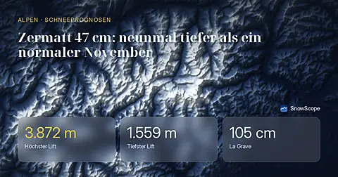
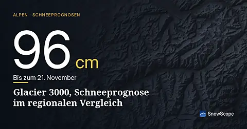
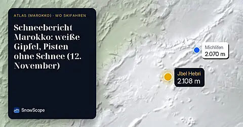
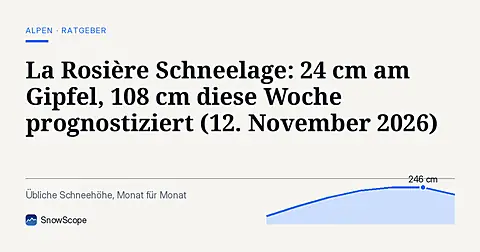
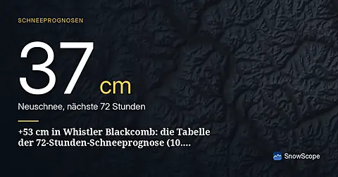
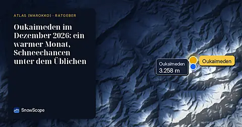
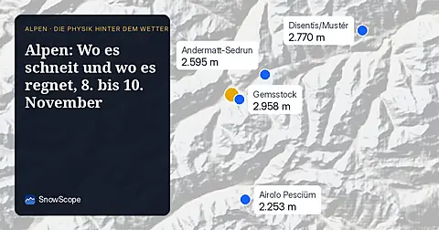

Schneeberichte · Schneeprognose
Tägliche Schneeberichte für Skifahrer: wo der Schnee liegt, was kommt und wo du fahren kannst, aus der SnowScope-Schneekarte und Messstationen. Jede Zahl stammt aus den Daten des Tages.


Zermatt hat heute in den oberen Höhen 47 cm, 690% über dem November-Median. Die 0°C-Grenze bleibt bis Freitag über 2.200 m.

Alpen-Schneeprognose 18. November: 110 cm erwartet in Orelle, 105 cm in Les Grands Montets. Bester Schnee kommt Donnerstag und Freitag.


Der Pistenplan von Sillian (Hochpustertal) mit unserer Schneeschicht am 13. November 2026: 8,6 cm am Gipfel auf 2399 m, untere Hänge aper, und eine Woche mit Regen und Schnee gemischt, Schneefallgrenze bei 1.800 bis 2.000 m.

Schneelage in Silvretta Montafon am 13. November 2026: 4,5 cm am Gipfel auf 2421 m, Mittelstation und Tal noch aper, diese Woche rund 40 cm in der Höhe, im Tal Regen unter 1.500 m.

Schneebericht Lech Zürs am 13. November 2026: rund 6 cm oben (2436 m) und an der Mittelstation, aper in Lech auf 1430 m. Diese Woche oben 42 cm nach unserer Prognose, bis 91 cm nach anderen, Regen und Schnee gemischt um 1400 m. Und warum Lech die schneereiche Seite des Arlbergs ist.

St Anton hat am 13. November 1 cm an der Spitze und 5 cm auf Mittelhang. Die kommende Woche bringt 33 bis 42 cm, aber Regen im Tal.

Die Skigebiete im Atlas halten heute keinen Schnee auf ihren Pisten. Schnee ist nur auf den höchsten Gipfeln gespeichert: etwa 40 km² Boden, bis zu …

Schneebericht Obergurgl am 13. November 2026: rund 20 cm oben (3024 m), 5 cm an der Mittelstation, schneefrei an den untersten Liften (1784 m). Schneeprognose der Woche: 34 cm oben, 21 cm unten, Schneefallgrenze um 1700 m. Dazu der übliche Saisonstart.

Die Schneehöhe in Sölden am 13. November 2026: rund 9 cm oben auf 3245 m, 5 cm an der Mittelstation, nichts im Tal auf 1346 m. Diese Woche 25 cm oben, Regen unter etwa 1620 m. Gletscher gegen Dorf, dazu 46 vergangene Winter.

Die Schneehöhe in Chamonix am 13. November 2026, Höhe für Höhe: nichts im Talboden, 1 cm auf 2001 m, 12 cm oben am Brévent-Flégère (2486 m), 5 bis 24 cm oben an den Grands Montets (2768 m). Rund ein Meter in der Höhe diese Woche erwartet, Regen im Tal. Wie tief es in Chamonix üblicherweise wird, aus 46 Wintern.

Schneehöhe in Ischgl am 13. November 2026: rund 5 cm oben (2868 m), 4 cm an der Mittelstation, nichts im Tal auf 1352 m. Diese Woche bis zu 42 cm am Grat, im Paznaun Regen unter etwa 1570 m. Dazu Tal und Grat in 46 vergangenen Wintern.

Schneebericht Les Menuires vom 13. November 2026: 28 cm am Gipfel (2838 m), nichts liegt auf 2112 m oder 1386 m. Etwa 80 cm am Gipfel in sieben Tagen erwartet, Schneefallgrenze um 1500 bis 1700 m. Warum Val Thorens, 450 m höher im selben Tal, schon mehr hat.

Zwischen 1.380 m und 3.410 m: Dort sieht unsere Prognose die Nullgradgrenze in Westkanada in den nächsten Tagen. In den wärmsten Stunden steigt die …

Die Karten von heute blicken zwei Wochen voraus in den Pyrenäen, 13. November bis 26. November. Sie stammen aus die beiden Prognosen, die zwei …

Schneebericht im Atlas (Marokko), 12. November. Skigebiete im Atlas heute: kein Schnee auf den Pisten. Schnee nur auf den höchsten Gipfeln: etwa …

Die Sonnenseite des Kleinen Sankt Bernhard in Zahlen.

Am 12. November liegt noch kein Schnee auf Oukaïmeden. Die Gipfel des Atlas sind kahl; die Wintersaison erreicht ihren Höhepunkt normalerweise im März mit 58 cm an der Spitze.

Der Schnee heute in Livigno, was die europäische Saisonprognose für den Dezember sagt, und warum die Höhe zu Weihnachten gegen einen milden Monat gewinnt.
Schnee heute in Cortina, die europäische Saisonprognose für Dezember und unsere Chancen auf weiße Weihnachten in den östlichen Dolomiten.

Dolomiten-Vorhersage für Dezember 2026: 1,7 °C wärmer, etwas feuchter, 30 cm Schnee bis Jahresende, Weihnachten in der Mittelhöhe weiß. Daten vom 10. November.

Wie viel Wasser der Schnee im Atlas im Februar 2027 halten könnte: Die europäische Saisonprognose ist etwa 3 °C wärmer und im Westen und Süden nasser, die Schneechancen in Marokkos Flussgebieten bleiben gering.

Januarprognose für Marokkos Atlas: 69 Millionen m³ Schneewasser erwartet, deutlich unter dem Durchschnitt von 206. Daten vom 10. November 2026.
Bou Iblane bleibt bis in den Dezember hinein schneefrei. Saisonprognose: 2,3°C wärmer als üblich, nur 22 cm Neuschnee erwartet, 0 cm Schneebelag am 31. Dezember. Daten: 10. November 2026.

Jeden Tag listen wir die Skigebiete, die den meisten Neuschnee bekommen sollen, für die nächsten 24 Stunden und bis zum 13. November, in Europa, …

Saisonausblick für die Rockies: wärmerer Dezember bevorsteht, Schneefall nahe dem Normalwert, aber der Norden deutet auf weniger Schnee, während Colorado und Utah unentschieden bleiben. Daten vom 10. November 2026.

Der Dezember in den Südalpen wird wärmer und nasser als üblich, aber die Schneehöhe zum Jahresende sollte nahe am Normalwert bleiben. SnowScope-Analyse vom 11. November 2026.

Oukaimeden erwartet einen warmen Dezember mit 13 cm Schneeprognose am 31. Dezember, deutlich unter den üblichen 26 cm. Daten vom 10. November 2026.

Chamonix startet den Dezember mit 27 cm in der Höhe, aber dünne Schneedecke darunter. Wärme und Nässe drücken gegeneinander; erwarten Sie nahezu normalen Dezemberschnee. Daten vom 10. November 2026.

Unsere Prognose hat die Nullgradgrenze in den Pyrenäen in den kommenden Tagen zwischen 2.610 m und 3.840 m. In der wärmsten Zeit des Tages steigt die …

Schneefallgrenze-Vorhersage 2.190–2.850 m vom 8.–10. November. Oberhänge bekommen Schnee; Täler bleiben nass. Daten vom 7. November.

Schneefallgrenze nahe 3.710 m vom 8. bis 12. November: Regen in Oukaïmeden und Imlil, Schnee auf dem Gipfel des Toubkal. Karte und Grafik.

Rund 192 mm Wasser an Whistlers oberen Hängen vom 7. bis 12. November: Die Nullgradgrenze schwankt zwischen 1.410 und 2.920 m, oben Schnee, unten Regen.

Bis zum 10. November ergibt unsere Prognose 36 cm in Orcières Merlette, 33 cm in Les Deux Alpes und 32 cm in La Grave. Die Werte der Skigebiete sind …
Die Skigebiete im Atlas haben heute keinen Schnee auf den Pisten. SnowScope findet nur auf den höchsten Gipfeln Schnee: etwa 80 km² …

In den Alpen fallen bis 8. November in Saas Grund 21 cm Neuschnee. Prognosedaten vom 5. November zeigen, wo und wann Schnee an fünf wichtigen Skigebieten fällt.

Unser Schneemodell für den 5. November 2026 prognostiziert bis Sonntag bis zu 94 cm Neuschnee in Westkanada, mit erheblichem Schneefall auch in den Alpen und im Westen der USA.